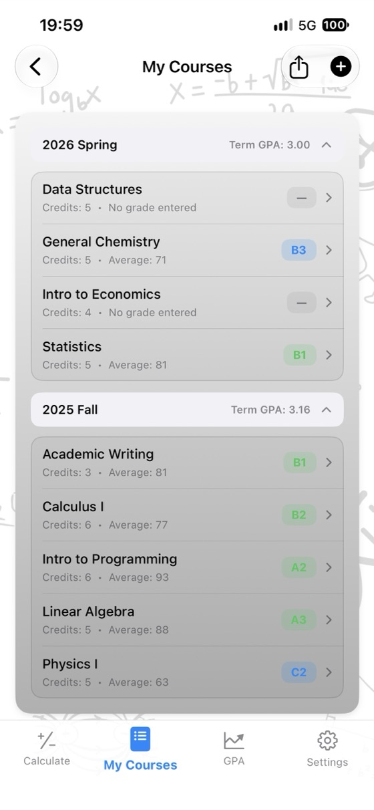
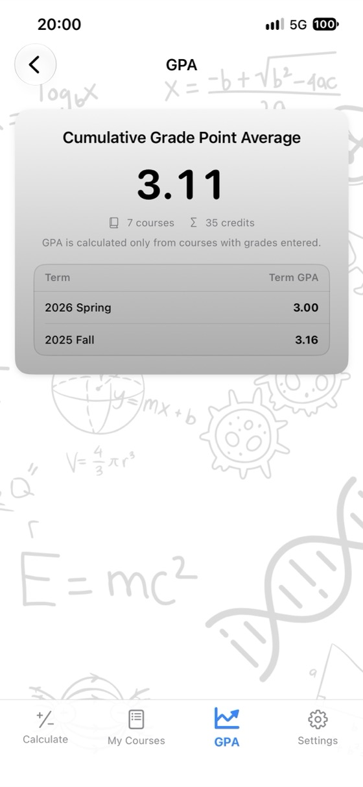
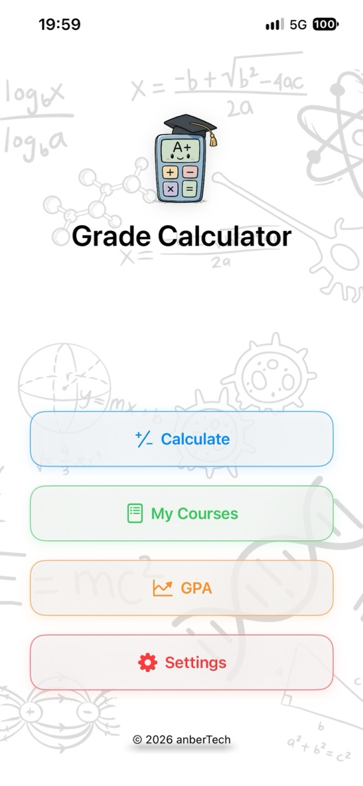
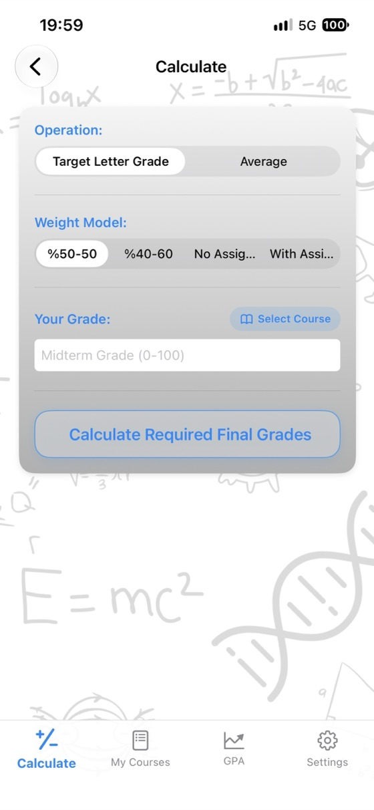
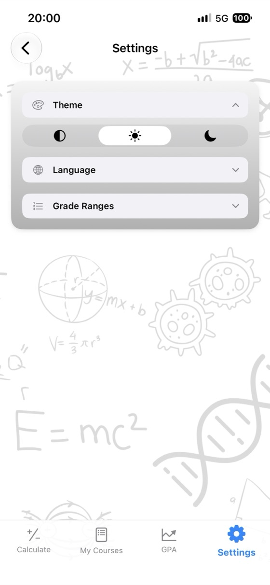

Nota xwe bizane,
pêşeroja xwe plan bike.
Navînîya dersê, nota imtîhana finalê ya ku pêwîst e û GPA-ya te di sepanekê de. Bê reklam, bê hesab û bi tevahî offline.
- ✓ Belaş
- ✓ Bê reklam
- ✓ Bê hesab
- ✓ Offline


Niha hesab bike
Berî daxistina sepanê li vir biceribîne. Nirxan biguherîne û encam wê tavilê nû bibe.
Giraniya imtîhana finalê: 60%
Giraniya imtîhana finalê: 60%
Hesabkerên belaş
Bêyî daxistina tiştekî wan di geroka xwe de bikar bîne. Tomarkirin ne pêwîst e û notên ku tu dinivîsî tu carî ji cîhaza te dernakevin.
Çima Hesabkera Notan?
Navînîya dersê
Notên vîze, final û peywirê bi giraniya wan re binivîse û navînî û nota xwe ya herfî tavilê bibîne.
Final a Pêwîst
Nota imtîhana finalê ya herî kêm ji bo her nota herfî di ekranekê de bibîne.
Şopandina GPA
Dersên xwe li gorî heyaman tomar bike; GPA-ya heyamê û GPA-ya giştî bixwe nû dibin.
Pîvana notan ya te
Navberên notên herfî û pûanên notan li gorî dibistana xwe biguherîne.
Raporta notan ya PDF
Ders û navînîya xwe bi yek pêlê wek PDF parve bike.
17 ziman
Îngilîzî, Spanî, Almanî, Japonî, Erebî, Tirkî û zêdetir.
Pêşî nepenî
Bê hesab, bê reklam, bê şopandin. Daneyên te li ser cîhaza te dimînin.
Offline dixebite
Înternet ne pêwîst e: di hefteya imtîhanan de, li pirtûkxaneyê an li her derê.
Nêrînek li sepanê



Pirsên pir tên pirsîn
Ez ê navînîya dersa xwe çawa hesab bikim?
Her notê bi giraniya wê re pir bike û encaman li hev zêde bike. Bi vîzeya 40% û finala 60%: navînî = vîze × 0.40 + final × 0.60. Vîzeya 62 û finala 75 encama 62 × 0.40 + 75 × 0.60 = 69.8 dide. Heke peywirek hebe, nota wê ya bi giranî jî lê zêde bike; divê giranî bi hev re bibin 100%.
Ji bo derbasbûnê di finalê de çend pêwîst e?
Final a pêwîst = (navînîya armancê − vîze × giraniya vîzeyê) ÷ giraniya finalê. Bi vîzeya 55 ya bi giraniya 40% û navînîya derbasbûnê ya 50: (50 − 22) ÷ 0.60 = 46.7, ji ber vê yekê di finalê de herî kêm 47 pêwîst e. Hesabkera Notan vê yekê ji bo hemû notên herfî bi carekê re hesab dike.
GPA çawa tê hesabkirin?
Pûanên nota her dersê (A = 4.0, B = 3.0 …) bi krêdiyên wê re pir bike, encaman li hev zêde bike û li krêdiyên giştî parve bike. Encam Navînîya Giştî ya Notan a te li ser pîvana 4.0 ye.
Navberên notên herfî li her derê yek in?
Na. Navber û pûanên notan di navbera welat, zanîngeh û heta dersan de diguherin. Di sepanê de dikarî pîvana notan li gorî ya xwe bi temamî biguherînî.
Nota finalê ya herî kêm çi ye?
Hin dibistan, heta ku navînîya te têrê bike jî, heke nota imtîhana finalê ji astekê nizimtir be (mînak 30, 45 an 50), te ji dersê derbas nakin. Asta herî kêm binivîse û finala pêwîst wê hesabê wê bike.
Hesabkera Notan belaş e?
Erê. Sepan li App Store belaş e û reklam, abonetî an kirînên nav sepanê tune ne. Hesabkerên vê malperê jî belaş in.
Notên min li ku tên hilanîn?
Tenê li ser cîhaza te. Hesab ne pêwîst e û tiştek ji serverekê re nayê şandin. Notên ku tu di hesabkerên webê de dinivîsî tu carî ji geroka te dernakevin.
Guhertoya Android heye?
Guhertoya Android nêzîk de tê Google Play. Niha sepan ji bo iPhone û iPad (iOS 17.6 an nûtir) li App Store heye.
Hemû dersên xwe li cîhekî bişopîne
Belaş. Bê reklam. Bê hesab.